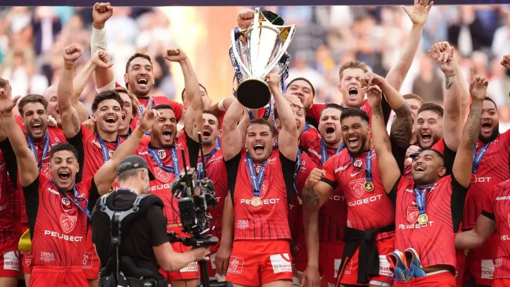

Noticias
Súper Rugby Américas: día y horarios confirmados para las semifinales
Quedaron definidos los cruces para los playoffs del Súper Rugby Américas. Los mismos serán Pampas vs Peñarol y Dogos XV vs Yacare XV.
Las dos franquicias argentinas aseguraron su localía, por lo que ambas semifinales se jugarán en Argentina. El 7 de junio, Pampas recibirá en el CASI a Peñarol, desde las 19:15 horas, mientras que más tarde, Dogos XV, que terminó segundo, se medirá ante Yacare XV en Córdoba, a partir de las 21.15.... Seguir leyendo
Mundial M20, el calendario completo de la competencia que se jugará en Sudáfrica
El Mundial Juvenil M20 tendrá lugar entre el 29 de junio y 16 de julio en Sudáfrica. Allí, Los Pumitas compartirán el Grupo C con Inglaterra, Fiji y el seleccionado local, mientras que el resto de las zonas se integrarán con el campeón defensor Francia, Nueva Zelanda, España, Gales (Grupo A), Australia, Georgia, Italia e Irlanda (Grupo B).... Seguir leyendo
Champions Cup: de manera invicta, el camino de Toulouse a su sexto título
Toulouse se consagró campeón de la Champions Cup por sexta vez en su historia este sábado luego de derrotar 31-22 a Leinster en la final. Lo obtuvo de manera invicta, y superando con contundencia a la mayoría de sus rivales.... Seguir leyendo

La URBA cambia de horario por Los Pumas
Tanto el 13 de julio como el 31 de agosto, la Unión de Rugby de Buenos Aires decidió reprogramar las Divisiones Superiores de todas sus categorías. ¿El motivo? Los partidos que jugarán Los Pumas de local por la ventana internacional de julio ante Francia en el Estadio José Amalfitani y el encuentro por el Rugby Championship frente a Australia en el Estadio UNO de La Plata... Seguir leyendo
¿Qué equipos se mantienen invictos en lo que va del URBA Top 12?
Se completó la fecha 5 del URBA Top 12 Copa Macro presentada por Zurich y se mantiene la tendencia: SIC y Alumni, los dos finalistas de 2023, llevan la delantera en las primeras jornadas de la actual campaña... Seguir leyendo
URBA Top 12: los dos equipos que continúan sin ganar en el torneo
Tras disputarse las primeras cinco jornadas del URBA Top 12 Copa Macro, solamente dos son los equipos que continúan sin poder conocer la victoria: CUBA y Atlético del Rosario... Seguir leyendo